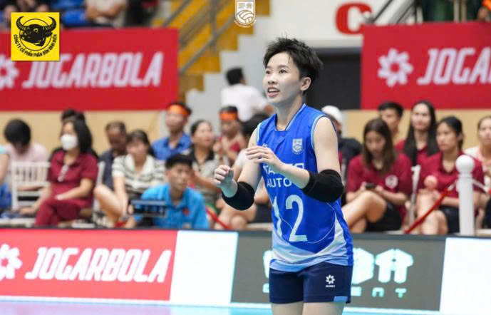
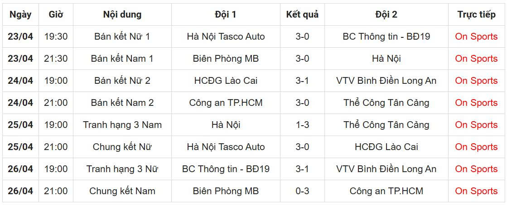

Lịch thi đấu và kết quả bóng chuyền cúp Hùng Vương 2026 mới nhất
Sau các vòng loại kịch tính, 8 đội bóng chuyền mạnh nhất Việt Nam đã chính thức giành vé vào bán kết Cúp Hùng Vương 2026, sẵn sàng tranh tài từ 23-26/4 tại tỉnh Phú Thọ.

Các đội bán kết Cúp Hùng Vương 2026 sẽ thi đấu từ 23-26/4 tại Phú Thọ
Cúp Hùng Vương 2026 tiến vào giai đoạn quyết định với sự góp mặt của 8 đội bóng chuyền tiêu biểu, bao gồm 4 đội tham gia nội dung nam và 4 đội tham gia nội dung nữ. Sau khi hoàn thành các vòng bảng, những đội này đã chứng minh sự vượt trội của mình qua các trận đấu đầy căng thẳng và kỹ thuật cao.
Kỳ bán kết hứa hẹn là một sân chơi ngang ngửa, nơi mà mỗi đội đều có cơ hội để vào vòng chung kết. Các trận đấu sẽ diễn ra liên tục trong bốn ngày, từ ngày 23 đến 26 tháng 4, tại sân vận động Phú Thọ, nơi có đủ tiện nghi để đón tiếp các giải đấu bóng chuyền chất lượng cao.
Nội dung nam: Bốn ứng viên vàng ngang sức

Các đội bán kết Cúp Hùng Vương 2026 sẽ thi đấu từ 23-26/4 tại Phú Thọ
Ở nội dung nam, bốn đội xuất sắc bao gồm Biên Phòng, Công an Thành phố Hồ Chí Minh, Thể Công Tân Cảng và Hà Nội sẽ tiến hành các cặp thi đấu bán kết. Biên Phòng, với lịch sử thành công lâu đời trong các giải đấu quốc nội, sẽ đối mặt với Hà Nội trong một trận đấu đầy kỳ vọng. Đây là một thời cơ quý giá để Hà Nội khẳng định vị thế sau 21 năm vắng bóng ở vòng bán kết của giải đấu này.
Cặp thi đấu còn lại sẽ là Công an Thành phố Hồ Chí Minh gặp Thể Công Tân Cảng. Công an Thành phố Hồ Chí Minh đã cho thấy sự tiến bộ rõ rệt qua các mùa giải gần đây, trong khi Thể Công Tân Cảng vẫn là một lực lượng ổn định và là ứng viên mạnh cho chức vô địch. Hai trận đấu nam hứa hẹn sẽ mang lại những giây phút căng thẳng và thú vị cho người hâm mộ.
Nội dung nữ: Cuộc chiến giữa những nữ vương
Nội dung nữ cũng không kém phần hấp dẫn khi có sự tham gia của Hà Nội Tasco Auto, Hóa chất Đức Giang, VTV Bình Điền Long An và Binh chủng Thông tin. Hà Nội Tasco Auto, với đội hình mạnh và kinh nghiệm dày dạn, sẽ đối đầu với Binh chủng Thông tin trong một trận đấu có thể là những rất quyết định.
Cặp thi đấu thứ hai sẽ là Hóa chất Đức Giang so tài với VTV Bình Điền Long An. Trận đấu này được xem là điểm nhấn của bán kết nữ, bởi cả hai đội đều có sức mạnh ngang nhau về kỹ thuật, chiến thuật và tình huống. Hai trận đấu nữ hứa hẹn sẽ mang lại những phút giây đầy cảm xúc cho các cổ động viên yêu thích bóng chuyền.
Với sự cân bằng về lực lượng và kỹ năng giữa các đội bán kết, Cúp Hùng Vương 2026 sẽ tiếp tục chứng tỏ tầm quan trọng của mình trong năm của bóng chuyền Việt Nam. Các trận bán kết sẽ là những bước đệm quan trọng trước khi xác định những đội xuất sắc nhất bước vào vòng chung kết và tranh tài cho chức vô địch cuối cùng.
Những người hâm mộ bóng chuyền Việt Nam sẽ có cơ hội được chiêu bái những điểm sút cực đẹp, những pha chắn bóng tuyệt vời, và tinh thần thi đấu sẵn sàng hy sinh của các cầu thủ. Lịch thi đấu từ 23-26/4 sẽ là một dịp để bóng chuyền Việt Nam khẳng định vị thế và sức hút của mình tại đấu trường quốc nội.